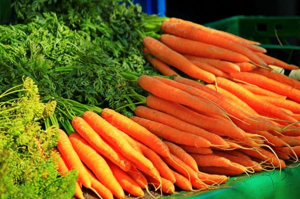

Consommons Produits Togolais
Il est temps de retouner vers la terre. Comme dans le temps nous mangions biologique. Nous avons juste par la bonne consomation evtiter de nombreuse maladies.Qu'est ce qui nous empeche aujourdh'hui? les defis sont là on ne peut plus les nier.
Nourrir le togolais à partir des resources togolaises est possible.

Nous avons des legumes frais. Nous essayons de distribuer les produits au maximum 3 heures après la commande.